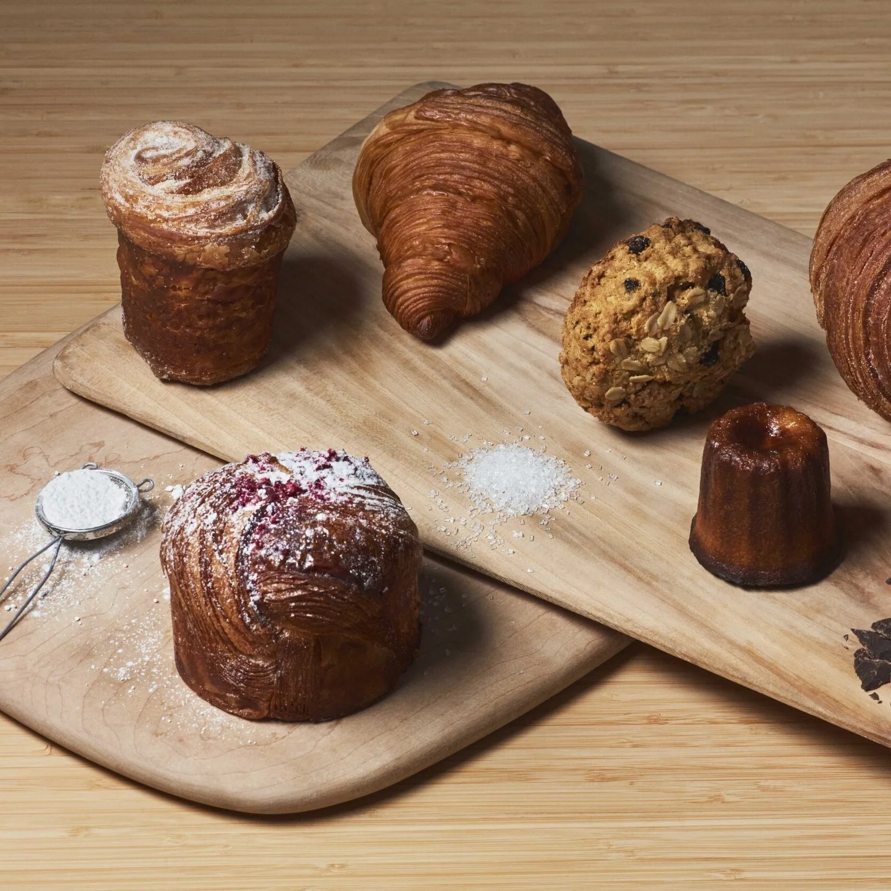
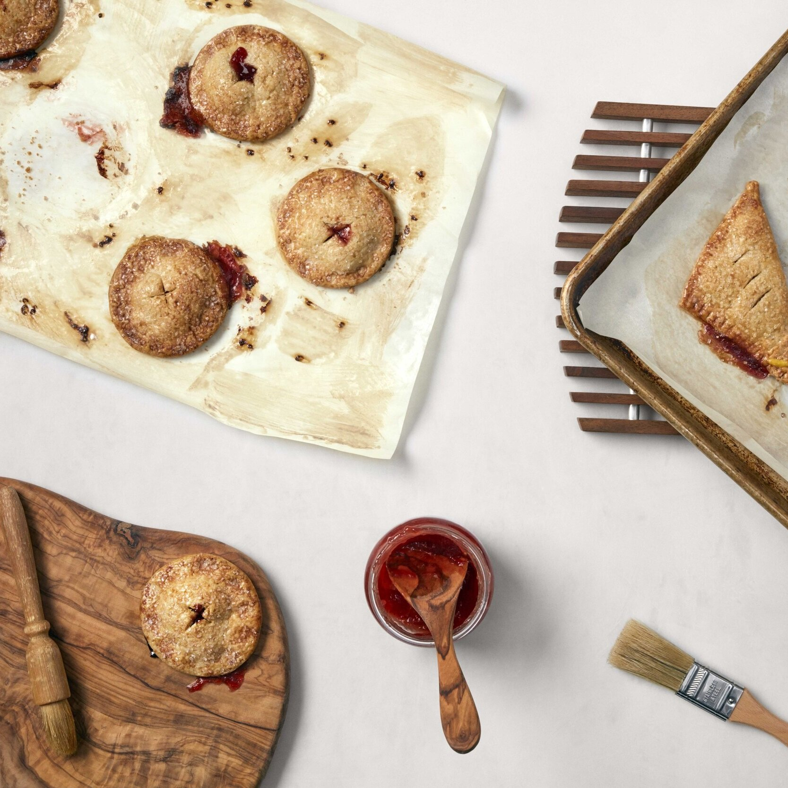

Sourdough
Country Loaf
Open crumb, dark crust. Made with freshly milled heritage wheat, wild starter, and nothing else.
From $12

The Pantry
Every item in our pantry reflects the same commitment — real ingredients, honest methods, and food that nourishes. Order direct from the farm.
Artisan Bakery
Sourdough
Open crumb, dark crust. Made with freshly milled heritage wheat, wild starter, and nothing else.
From $12

Pastry
Hand-rolled, slow-proofed, and glazed with raw honey. Made with real butter and ground cinnamon — nothing artificial.
From $5

Seasonal
A rotating selection of seasonal pastries baked fresh weekly. Ask what's in the oven.
Market price
Straight from the Farm

Pasture-Raised
Raised on open pasture, moved daily. No antibiotics, no hormones. Processed on-farm and available fresh or frozen.
From $18

Dairy
Slow-churned from cream sourced from grass-fed cows. Sea-salted and unsalted varieties available.
From $9

Seasonal Harvest
A weekly curated box of what's growing. No fillers, no filler farms — just what came out of the ground this week.
From $35 / week

Bake With Us
Small groups, real technique, no shortcuts. Learn to work with wild starter, mill your own flour, and bake loaves you'll be proud of. All skill levels welcome.
Check Availability